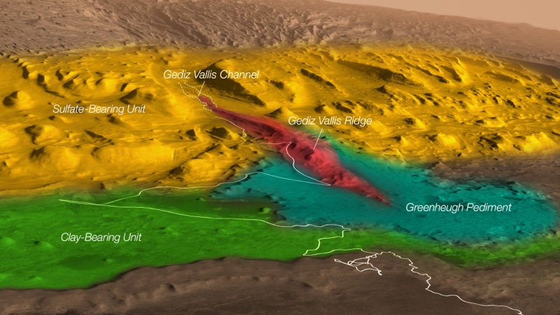
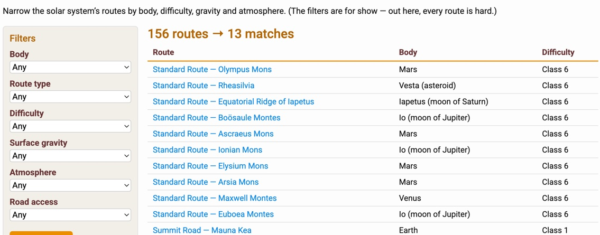
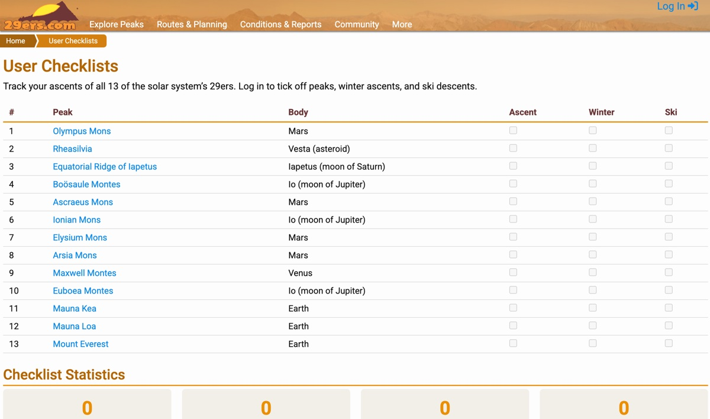

- Olympus Mons — summit dusty, ~−100°C, 72 Pa. Regional dust on the flanks. (Sol 4012)
- Maxwell Montes — a brisk ~380°C, 90 atm, sulfuric haze. Coolest spot on Venus. (today)
- Rheasilvia — 0 recorded ascents. Be the first. (all-time)
- Boösaule Montes — 15 km basal scarp; rockfall likely. Mind the radiation. (Io)
- Mount Everest — still the shortest peak on the list. (Earth)
The Tallest Mountains in the Solar System
Everything you need to plan your ascents of the solar system's highest peaks
Every mountain in the solar system that out-tops Everest, in one place
Planning
A safe and successful summit starts with proper planning — a thorough review of the route, the relief profile, and the local conditions. Gravity, air pressure, temperature and radiation vary wildly from peak to peak, so the prep for a Mars shield volcano looks nothing like the prep for a tilted block of crust on a moon of Jupiter.
Browse the full ranked list of the solar system's 13 tallest mountains, dig into each peak's stats, photos, routes and conditions, and figure out whether you'll need a pressure suit, a spacecraft, or just a warm jacket.
Every peak page carries the elevation, body, type, coordinates, discovery, a photo gallery and a themed weather forecast. And the Route Selection Tool will narrow all 13 by body, gravity, atmosphere and class.
Explore the Peaks
New to interplanetary mountaineering?
What are 29ers?
Nobody has posted a trip report yet, because nobody has been. Want to be the first?
Trip Reports
Browse the full ranked list of the solar system's 13 tallest mountains, dig into each peak's stats, photos, routes and conditions, and figure out whether you'll need a pressure suit, a spacecraft, or just a warm jacket.

Explore the Peaks
New to interplanetary mountaineering?
What are 29ers?
Nobody has posted a trip report yet, because nobody has been. Want to be the first?
Trip Reports

Track Your Progress
A peak checklist is an easy way to document your ascents, even if you never intend to finish the whole list.
For each 29er, track winter ascents, ski/snowboard descents (good luck on Io), repeats and solo climbs.
Tick off all 13
or just chase the two co-tallest, Olympus Mons and Rheasilvia, and compare your list with a partner when planning the next expedition.
Checklists
For each 29er, track winter ascents, ski/snowboard descents (good luck on Io), repeats and solo climbs.
Tick off all 13
or just chase the two co-tallest, Olympus Mons and Rheasilvia, and compare your list with a partner when planning the next expedition.
Checklists

Living History and Community
Every one of these summits was mapped by robotic explorers — Mariner, Viking, Voyager, Pioneer, Magellan, Galileo, Cassini and Dawn — and not one of them has ever been climbed. The first ascents are still out there, waiting.
Recorded summits so far, by humans or robots: zero. Every route on this site is a first ascent waiting to happen, and the beta is thin because there isn't any. Whether your future rope team forms on Mars, Io, or a moon of Saturn, the biggest mountains in existence aren't going anywhere. Compare notes in the 29ers.com Forum, or go climb something closer to home with the original 14ers.com.
Field Guide
Heading off-world soon? Don't forget the 29ers.com field guide.
Open the Field Guide
“AllTrails” is a trademark of AllTrails, LLC. “Gaia GPS” is a trademark of
Outside Interactive, Inc. and TrailBehind Inc. All trademarks are the property of their respective
owners. None of them cover Mars, and neither does GPS. 29ers.com is not affiliated with these
companies, with 14ers.com, or with any planet.
Open the Field Guide
About this site
29ers.com is the complete guide to the tallest mountains in the solar system — every peak that out-tops Mount Everest, from the giant shield volcanoes of Mars to the tilted crustal blocks of Io. The peaks, their stats and their photos are all real. Built by Spencer Boucher.